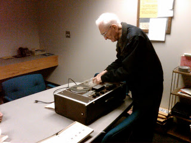

Judicial tyrants, now as then: U.S. Federal Judge David Erza (left); German National Socialist Judge Roland Freisler (below, right). Any resemblance to the legendary gangsta accountant Herbert Kornfeld (further below, right) is ... somehow oddly appropriate.
German dissidents Hans and Sophie Scholl were half-way through their show trial before the notorious Judge Roland Freisler when their parents Robert and Magdalene arrived at the courtroom.
The outcome of the trial wasn't in doubt; Hans and Sophie -- who were on trial along with their compatriot in the White Rose resistance, a young father named Christoph Probst -- had admitted to composing and distributing seditious leaflets urging opposition to Hitler's war and domestic tyranny.
As Christians the Scholls understood their duty to the truth; as German patriots they understood the necessity of bringing down the regime that was destroying their homeland. Hans and Sophie had learned their values from their parents, but the intrepidity with which they defended them was their own.
Denied entrance to the courtroom, Magdalene pleaded with a guard: "I'm the mother of two of the accused." "You should have raised them better," sneered the guard in an act of malice that was both deliberate and gratuitous.
The circumstances were different, and the sentence imposed on the victim much less severe than execution via guillotine, but there was more than a hint of the same cruel statist sanctimony in the lecture given by U.S. District Judge David Ezra when he sentenced Danille Kahre to five years' probation earlier this month.
At the time he pronounced sentence on Danille, Ezra -- who was less histrionic than Roland Freisler, but just as contemptible in his dogmatic collectivism as that Communist-turned-Nazi jurist -- had already sentenced her husband, Robert Kahre, to fifteen years in prison. Turning to the subject of the four Kahre children, Erza insisted it was Danille's duty to teach the children to serve and worship the government that is tearing their family apart.
Danille must not allow her children to experience "hatred for government or for people who participate in government," Ezra pontificated: "If, as a result of that trauma [of seeing their parents unjustly imprisoned], that turns them [the children] against their own country and leads along a path of hate and retribution, they will have lost their promise."
This man is not a criminal: Robert Kahre (in blue button-down shirt) following the federal jury's verdict.
Like the sibling freedom fighters Hans and Sophie Scholl, Robert and Danille Kahre understand that the government ruling us is our country's deadliest enemy. This authentic patriotism is as inscrutable to David Ezra was it was to Roland Freisler, and for the same reason: Each of those judges was a creature of the regime he served, and both of them defined "justice" as vindicating the power of the state in any and all circumstances.
After being acquitted on the basis of the same facts in a previous trial, Robert and Danille Kahre were found guilty by a federal jury of "tax crimes" -- a charge that describes the efforts of productive people to avoid having their honestly earned wealth stolen from them by the world's most vicious criminal syndicate. In this particular case, the method used by the Kahres -- owners and operators of a large and successful construction company -- protected their earnings, as well as those of the people with whom they worked, and underscored the pervasive criminal fraud practiced by the regime.

In operating their construction business, the Kahres paid workers as independent contractors, rather than "employees," in gold and silver coins minted by the U.S. government. The employees were able to sell those coins -- which were assigned a face value by the government, not by the Kahres -- at the much higher market value. The contractors then claimed a tax liability based on the government-assigned face value of the coins, not their value in Federal Reserve Notes (FRNs).
This is, if you will, the obverse of the government's claim that gold and silver minted currency are "legal tender" only for their face value. The Kahres simply reverse-engineered the logic of the legal tender laws in an entirely defensible application of the commandment to render unto Caesar only that which is Caesar's: If the government is content to perpetuate the fraud that a Gold Eagle fifty-dollar coin is worth only that amount, and not the $1171 and change it presently commands on the market, then the tax liability of that coin should reflect its fraudulent face value.
The Constitution has never authorized the federal government to create "money" in any fashion, let alone that of printing tastelessly decorated rectangles of rag paper it calls "dollars." The Constitution permits only the use of gold and silver as legal tender. Contrary to popular assumption, the function of "coining" gold and silver does not mean that the government was authorized to "issue" money of any kind.

Free Market defender and aerospace engineer Bill Denman cues up a lecture, recorded on reel-to-reel audiotape, by economist Dean Russell of the Foundation for Economic Education (FEE). Among Dr. Russell's numerous invaluable contributions was his translation of Frederic Bastiat's irreplaceable treatise The Law from French into English.Financial analyst and monetary historian Bill Denman points out that "coining" money "is simply a metal stamping process and regulating the value thereof is determining the size, weight, and firmness of the coin and stamping that information on its face."
Section 14 of the 1792 United States Coinage Act specifies that "it shall be lawful for any person or persons to bring to the mint gold and silver bullion, in order to their being coined.... And as soon as the said bullion shall have been coined, the person or persons by whom the same shall have been delivered, shall upon demand receive in lieu thereof coins of the same species of bullion which shall have been so delivered, weight for weight, of the pure gold or pure silver therein contained...."
"In other words," summarizes Denman, "anyone who owns gold and silver bullion (not just the mining companies) can take it to the mint and have it converted into certified coins and then spend them into circulation. It is not necessary to have government, or banks, `issue' currency" -- that is, it is not necessary under the terms of the Constitution and the 1792 Coinage Act, which is still in effect.
Under the existing "legal tender" laws, and the system of inflatable fiat money inflicted on our nation in 1913, spending constitutional money at the government's artificial face value would be suicidally stupid. But the very existence of government-minted gold and silver coins is usefully subversive of the official fictions on which the Regime's fraudulent monetary system depends.
In 1985, Congress passed the Gold Bullion Coin Act, which instructed the government to mint and circulate gold coins in denominations of $50, $25, $10, and $5. This produced an anomalous result: The same government that was issuing worthless Federal Reserve Note scrip was actually circulating constitutional currency as well (albeit in a fashion far removed from that authorized by the Constitution). This created a de facto dual monetary system, a fact not lost on the Kahres and a few others who understood the implications.
As Liberty Watch magazine pointed out more than a year ago, the supposedly criminal "tax fraud" practiced by the Kahres was actually perfectly legal under the dual system created by the feds: Given that there were two systems with two wildly different standards of value, which one was the correct standard for measuring taxable income? Nothing in any law or precedent dictated that it was necessary to use inflated FRNs for that purpose.
Accordingly, the Kahres paid their contractors in real money, thereby effectively wiping out their tax liability under the rules that the government itself had established. Nothing in federal law (including the "laws" dealing with the income tax, or federal court precedents) prohibits what the Kahres did in opting to paying those who did work for them in real money, and then turning the Regime's fraud against itself.
 Stormtroopers strike: A joint state-federal goon squad attacks the Kahre family business, May 29, 2009.
Stormtroopers strike: A joint state-federal goon squad attacks the Kahre family business, May 29, 2009. It must not be forgotten, however, that government is a criminal enterprise that enjoys an effective monopoly on interpreting the laws that supposedly restrain it.
Tax "evasion" is a supposed crime that injures nobody but the parasite class, but that is the class that operates the state's apparatus of coercion, extraction, and propaganda.
This is why on May 29, 2003, a platoon-sized (or larger) paramilitary force, exhibiting the boldness such people display only when they're serenely confident that their targets are unarmed and helpless, assaulted the Kahre family's Las Vegas business office.
Acting on a warrant subsequently found to be legally defective, the strike team, a pack of militarized mouth-breathers from the FBI and several local SWAT teams, busted down an unlocked chain-link gate in an APC before swarming the property.
Computers were seized; helpless senior citizens and women were brutalized and held for a prolonged period in 109 degree weather, forbidden to get a drink or use the bathroom. One of the victims (Kahre's sister) was so severely abused that she required medical treatment. Security cameras were disabled in an unsuccessful effort to suppress the details of the criminal assault. Kahre himself was arrested by a separate task force while conducting business at his bank.
All of this was done, remember, to someone who was not accused of a violent crime. Had Kahre been a criminal kingpin accused of victimizing others through violence and fraud, he would have been treated with much greater deference by the Feds -- perhaps as a gesture of "professional courtesy."
The same Regime that has lavished trillions of dollars on politically connected swindlers at Goldman Sachs has no moral standing -- or legal authority -- to punish the Kahres. But when has any criminal oligarchy -- be it Nazi, Soviet, or US-federal -- required actual authority to carry out its crimes?
Like Roland Freisler, David Erza is a sycophant in robes, a servant of a dying Regime.
"You know the war is lost," Sophie Scholl chided Freisler during her trial. "Why don't you have the courage to face it?"
Ezra is intelligent enough to recognize the truth about the system whose bidding he did in sending Robert Kahre: The monetary regime created in 1913 -- a system of institutionalized fraud, expropriation, and deceit in the service of war and tyranny -- simply cannot endure. What eventually replaces it may be something even worse, but its trajectory is set, and its destruction is inevitable.
Teach your children well: Danille Kahre comforts her two-year-old son Landon, whose father was sentenced to serve fifteen years as a political prisoner.
I earnestly hope that Danille Kahre spends every day until the Regime's overdue and well-deserved demise tirelessly cultivating within her children a righteous and proper hatred for it and all its works and pomps, as well as a principled contempt for the invertebrate and despicable specimens who serve it, of whom David Erza is a suitably wretched example.
May each of us blessed with the responsibility of raising children do likewise.
A Quick Note --
Please forgive the long hiatus. Yes, Thanksgiving occupied a great deal of my time and attention. But I've also been job-hunting, which is a time- and labor-intensive undertaking even in a good job market.
At the bottom of this edition of Pro Libertate you will notice a PayPal widget. After three years and hundreds of essays, I'm finally putting out a tip jar. I earnestly hope that those of you who find my work worthwhile can arrange to send small but regular donations. In any case, I remain very grateful for the help and support many of you sent to my family during my recent health crisis. Thank you so much, and God bless.
 Don't miss Pro Libertate Radio each weeknight from 6:00-7:00 Mountain Time (7:00-8:00 Central) on the Liberty News Radio Network.
Don't miss Pro Libertate Radio each weeknight from 6:00-7:00 Mountain Time (7:00-8:00 Central) on the Liberty News Radio Network. Dum spiro, pugno!


.jpg){kind=link}